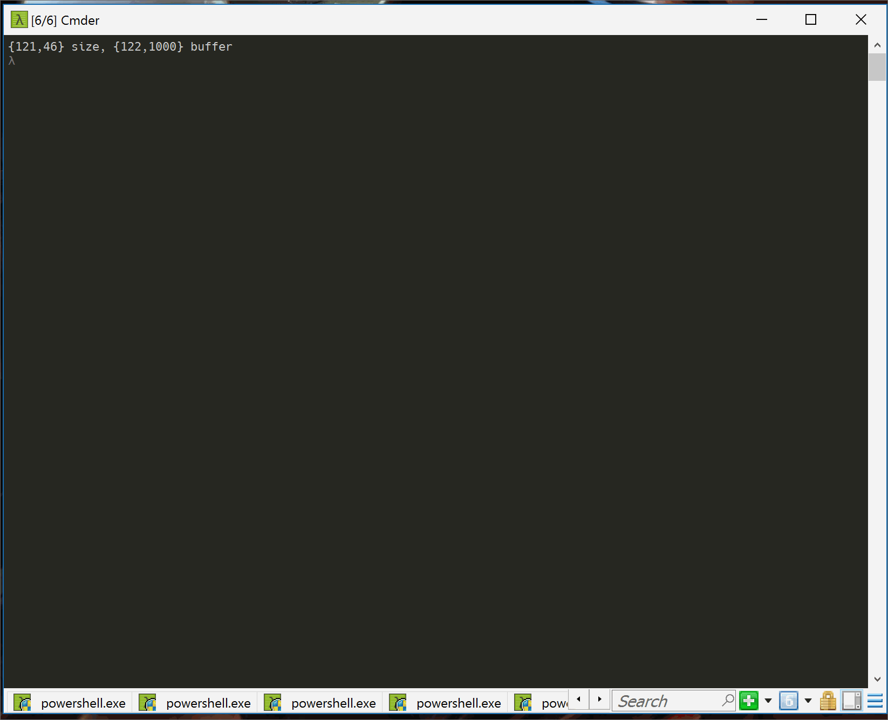
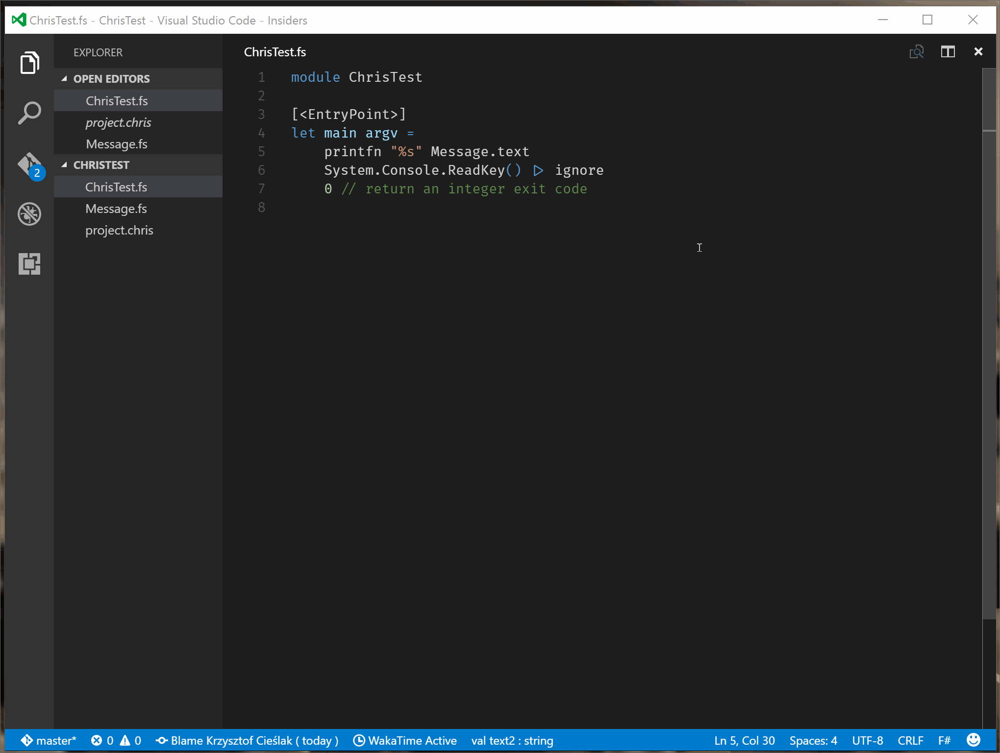

Creating custom project file for F#
Introduction
Let’s imagine a world where F# is independent language, with cross-platform tooling making life of every F# developer easier. In this world, after we’ve fixed dependency management problem with Paket, we could go one step further… and fix project file format and building. We would use same principles as Paket - very simple, human readable, file format which can be edited without any other tooling, and command line tool responsible for building such project.
In such world I’ve decided to create new open-source project called Chris
File format
For our hypothetical project file (called project.chris) I’ve decided to use toml. In this very simple file we would just specify few properties, files of our project, GAC references and external NuGet packages. It would look like as follows:
[Info]
Name = "Fancy_Test_Project"
Author = "Lambda Factory"
Git = ""
[Stuff]
References = ["mscorlib", "System", "System.Core", "System.Numerics"]
Files = ["Message.fs", "Test.fs"]
Packages = []
Build
Most important feature of every project system is ability to build project to executable version. As I’ve mentioned earlier one of the important points I’d like to address is ability to build project with command line with very simple commands. To build any F# project, in the end - no matter which project system we use, we have to execute F# Compiler with appropriate arguments (defining references, different build options, and source files).
In this case I’ve created really simple console application which user runs in project directory and it builds project, and produce .exe file. To parse toml I’ve decided to use Nett library.
First step is defining model representing our project, what is rather straightforward:
type Info = {
Name : string
Author : string
Git : string
}
type Stuff = {
Files : string []
References : string []
Packages : string []
}
type Project = {
Info : Info
Stuff : Stuff
}
Next step is creating 2 helper functions - one loading project.chris and parsing it to our model, second one transforming this model to right F# Compiler arguments. Again, nothing complex.
let load (path : string) =
let tmp = Toml.ReadFile path
let info = tmp.Get<TomlTable> "Info"
let stuff = tmp.Get<TomlTable> "Stuff"
{
Info = {
Name = info.Get<string>("Name")
Author = info.Get<string>("Author")
Git = info.Get<string>("Git") }
Stuff = {
Files = stuff.Get<string []>("Files")
References = stuff.Get<string []>("References")
Packages = stuff.Get<string []>("Packages") }
}, path
let toFSCParams (project, path) =
let folder = Path.GetDirectoryName path
let output = sprintf "%s.exe" project.Info.Name
[|
yield "-out:" + output
yield @"-r:C:\Program Files (x86)\Reference Assemblies\Microsoft\FSharp\.NETFramework\v4.0\4.3.1.0\FSharp.Core.dll"
for r in project.Stuff.References do
yield sprintf @"-r:C:\Program Files (x86)\Reference Assemblies\Microsoft\Framework\.NETFramework\v4.5\%s.dll" r
yield "--noframework"
for f in project.Stuff.Files do
yield Path.Combine (folder, f)
|]
Last step is creating function which runs F# Compiler. To do so we will use FSharp.Compiler.Service - .Net library that exposes functionality for implementing F# language bindings, additional tools based on the compiler or refactoring tools. What’s most important in this case it also let’s host F# compiler inside other application.
open Microsoft.FSharp.Compiler
open Microsoft.FSharp.Compiler.SourceCodeServices
open Microsoft.FSharp.Compiler.SimpleSourceCodeServices
let build (project,path) =
let scs = SimpleSourceCodeServices()
let parm = (project, path) |> toFSCParams
parm |> scs.Compile
And at the end we pipe it together:
[<EntryPoint>]
let main argv =
let errors, exit =
"project.chris"
|> Path.GetFullPath
|> load
|> build
exit // return an integer exit code
Now we can build our project!

Editor support
Another important part of project system is providing information for F# Language Services which lets us to create rich editing environment across many different editors. Fortunatly FSharp.Compiler.Service is designed to be totally decoupled from project file format and requires its custom type to provide all nice Language Services features. Since we already have function loading project.chris to memory all we need to do is creating function which maps our type to type required by FCS.
let toFSharpProjectOptions (project, path) =
let rsp = (project, path) |> toFSCParams
{
ProjectFileName = path
ProjectFileNames = [||]
OtherOptions = rsp
ReferencedProjects = [||]
IsIncompleteTypeCheckEnvironment = false
UseScriptResolutionRules = false
LoadTime = System.DateTime.Now
UnresolvedReferences = None;
}
Next step is actually adding support for project.chris to our editor of choice. It’s pretty easy for all editors and tools using FSharp.Compiler.Service in the background, but for sake of simplicity I’ve chosen VS Code with Ionide. As you may know, VS Code is editor created using Electron which is framework for building cross-platform, desktop applications using HTML, JS, and CSS. Such choice has many advantages, but one bug important drawback from F# editor tooling point of view - we can’t directly use .Net libraries in VS Code. To communicate with .Net libraries (and especially with FSharp.Compiler.Service) we are using FsAutoComplete - F# compiler service API exposed via a console application and HTTP server.
Adding project.chris support to FsAutoComplete is, again, fairly easy. First step is adding Chris project as reference to FsAutoComplete. Next we create helper function which will be executed if we try to load project.chris file - it’s basically copy-paste of same functions for .fsproj and project.json
member x.TryGetChrisProjectOption (file : string) : Result<_> =
if not (File.Exists file) then
Failure (sprintf "File '%s' does not exist" file)
else
try
let po = file |> Chris.load |> Chris.toFSharpProjectOptions
let compileFiles = Seq.filter (fun (s:string) -> s.EndsWith(".fs")) po.OtherOptions
let outputFile = Seq.tryPick (chooseByPrefix "--out:") po.OtherOptions
let references = Seq.choose (chooseByPrefix "-r:") po.OtherOptions
Success (po, Seq.toList compileFiles, outputFile, Seq.toList references, Map<string,string>([||]))
with e ->
Failure e.Message
Last step is modifying handler for project request
let options =
if file.EndsWith "fsproj" then
checker.TryGetProjectOptions(file, verbose)
elif file.EndsWith "chris" then
checker.TryGetChrisProjectOption file
else
checker.TryGetCoreProjectOptions file
Compile FSAC, copy modified version to Iondie plugin folder… and that’s all. Everything is working as always, just with project.chris.

Frequently Asked Question
Q: You haven’t mentioned VS at all, it surely means you hate it and ignore, right?
A: No, VS (with VFPT installed) is best F# IDE, but I don’t use it too much. Adding custom project file support to VS is definitely possible, it just requires knowledge I don’t have. Thus, I haven’t mentioned it in post.
Q: What about C# / F# interoperability, compatibility with existing F# projects?
A: In worst case scenario - we have compatibility on compiled code / package level ( I can imagine some workflow using Paket which would make it not too problematic). In “best” case - custom MsBuild task, but again, I don’t have enough knowledge to judge how possible it is.
Q: You’re just one of those elitist, arrogant guys thinking they are better because they use this new-overhyped thing - functional programming. You just hate MsBuild because it’s C#!
A: Yes, indeed. Move along. Nothing to see here.
Q: What about support for any other F# tooling such as FSharpLint?
A: Any tool using FSharp.Compiler.Service should be very easy to port, as presented above on FsAutoComplete example.
Q: Where is code, I want to use it now!
A: Code of this experiment is not published anywhere on purpose - I don’t want anyone to use it by any chance. It was just very simple proof of concept. Hopefully, one day F# Community will be ready for new project system.
Q: I really want to use something like that
A: Ask Dave Thomas about his Xebec project, and support fsprojexit
Summary
In this post I’ve presented possible ways of expanding F# development environment with new project system. I haven’t shown here any ready solutions for the problem but I hope that this post shows that having new, better project system is possible. We just need as Community to start reasonable discussion about such possibility.